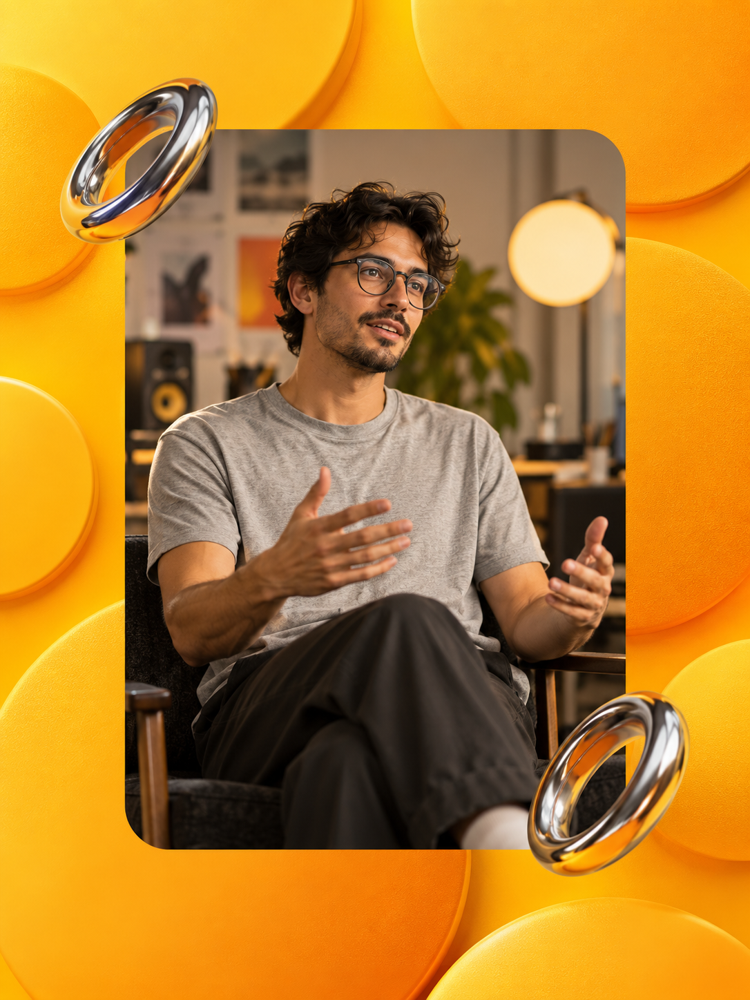
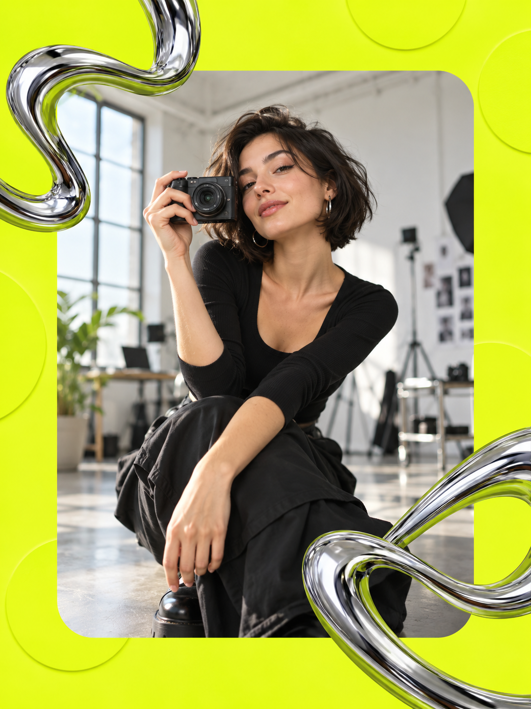

Short-Form Video Production
Konten video vertikal, dari konsep kreatif hingga hasil akhir. Dirancang untuk menarik perhatian dan menyampaikan cerita dengan singkat.

Made to connectOur Projects
Konten video vertikal, dari konsep kreatif hingga hasil akhir. Dirancang untuk menarik perhatian dan menyampaikan cerita dengan singkat.

Made to connectKonsep kampanye yang mempertemukan brand dan kreator. Menghubungkan cerita, gaya visual, dan audiens dalam kolaborasi yang terasa natural.

Better together01 / 02